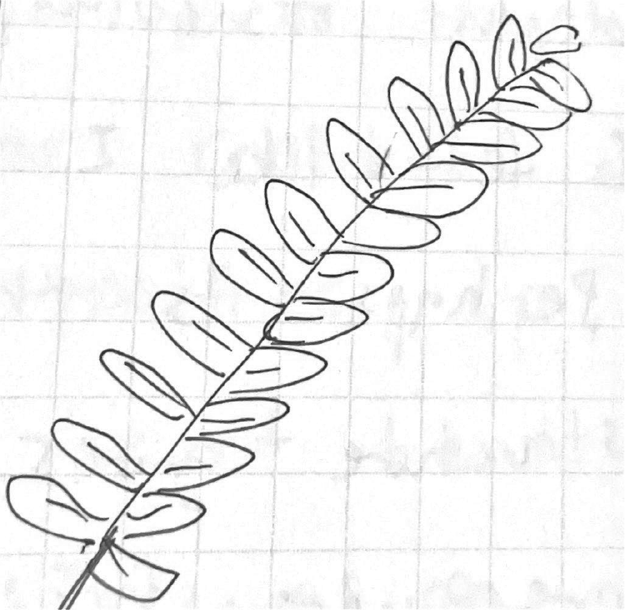
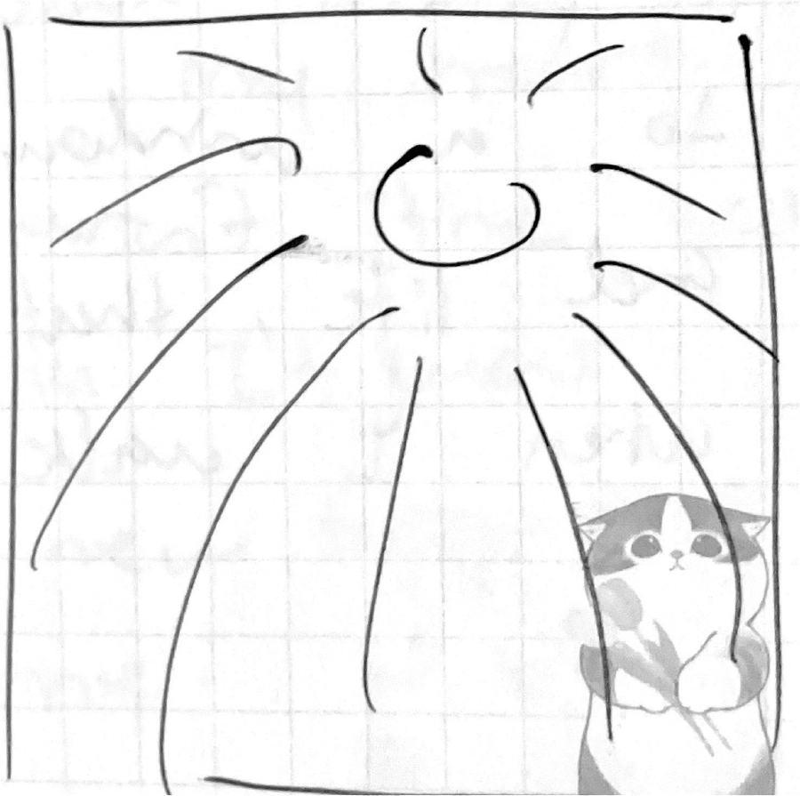
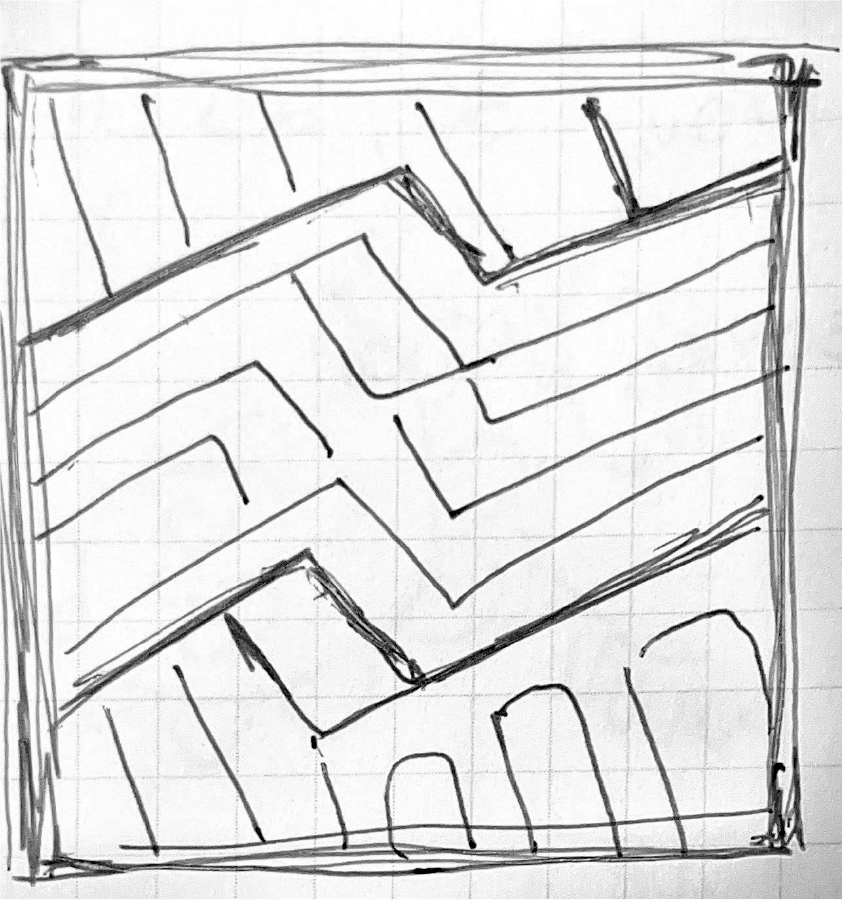
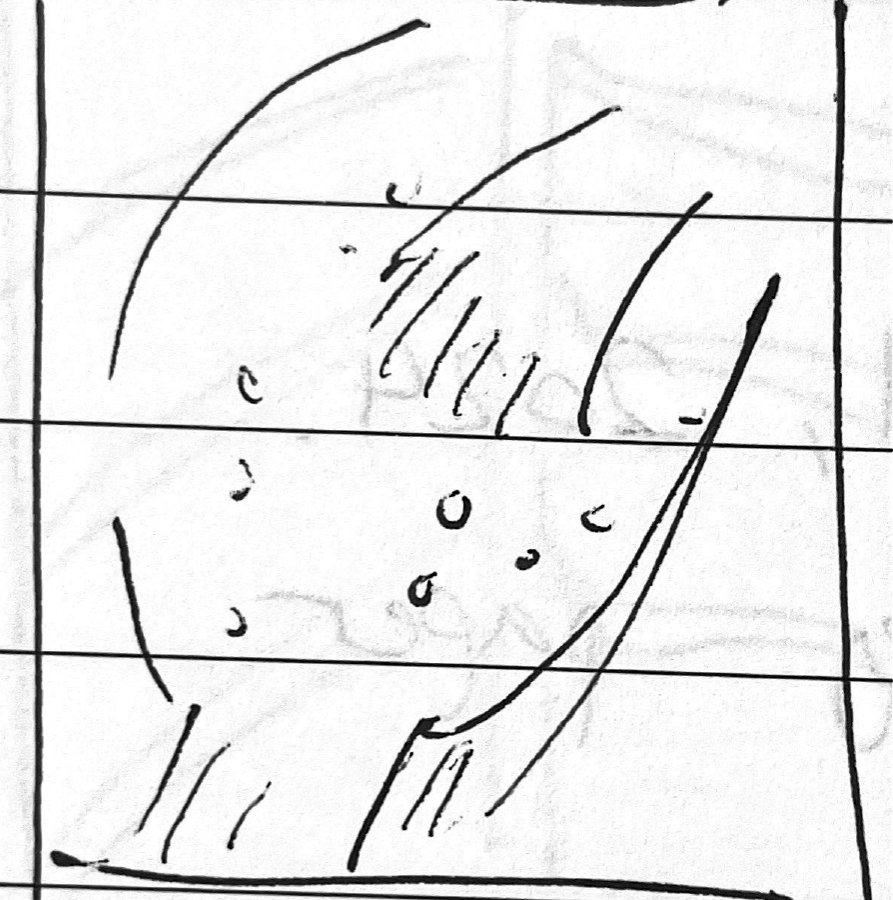
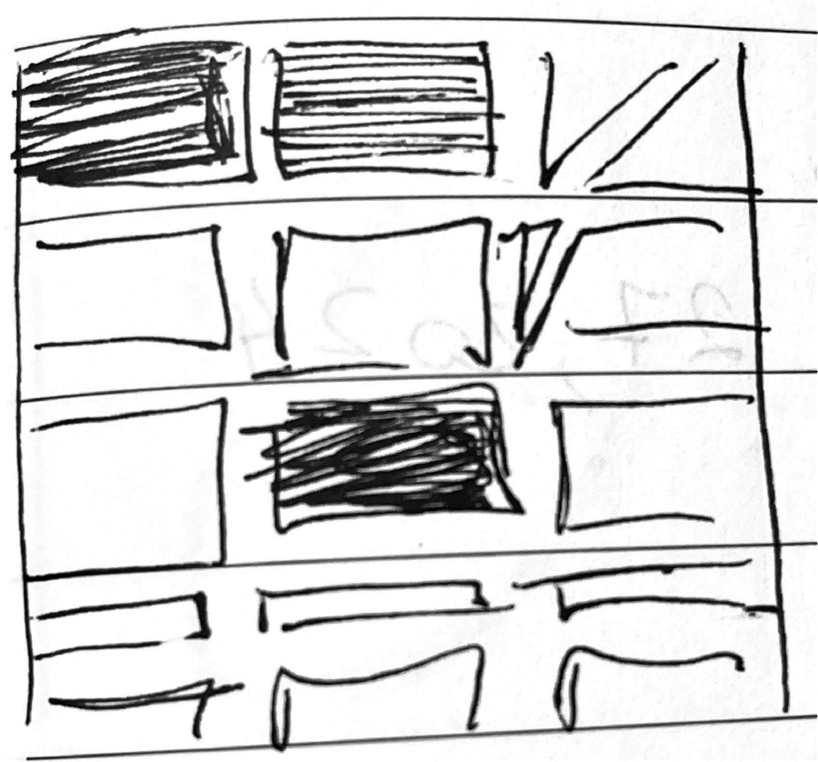
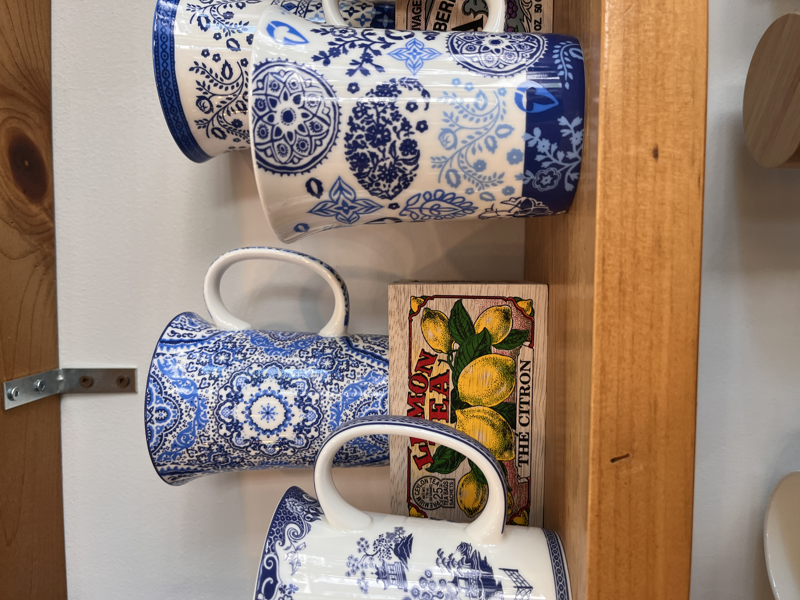
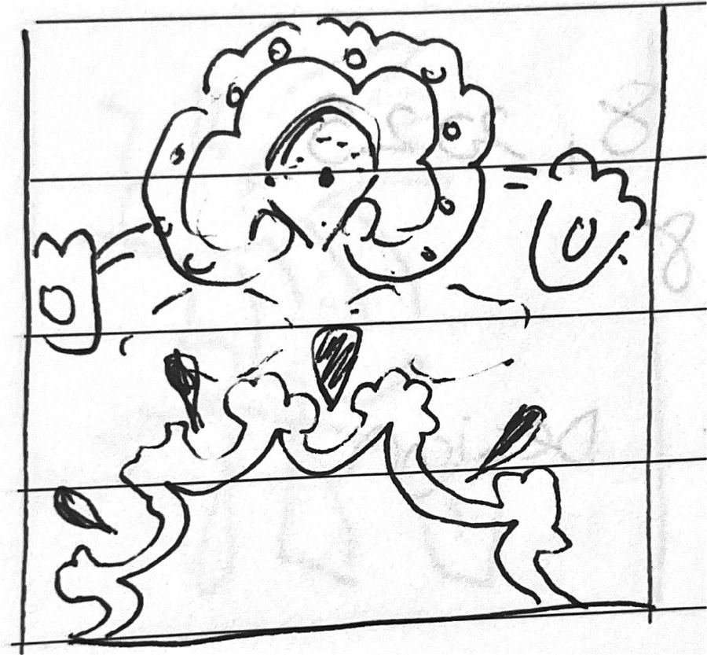
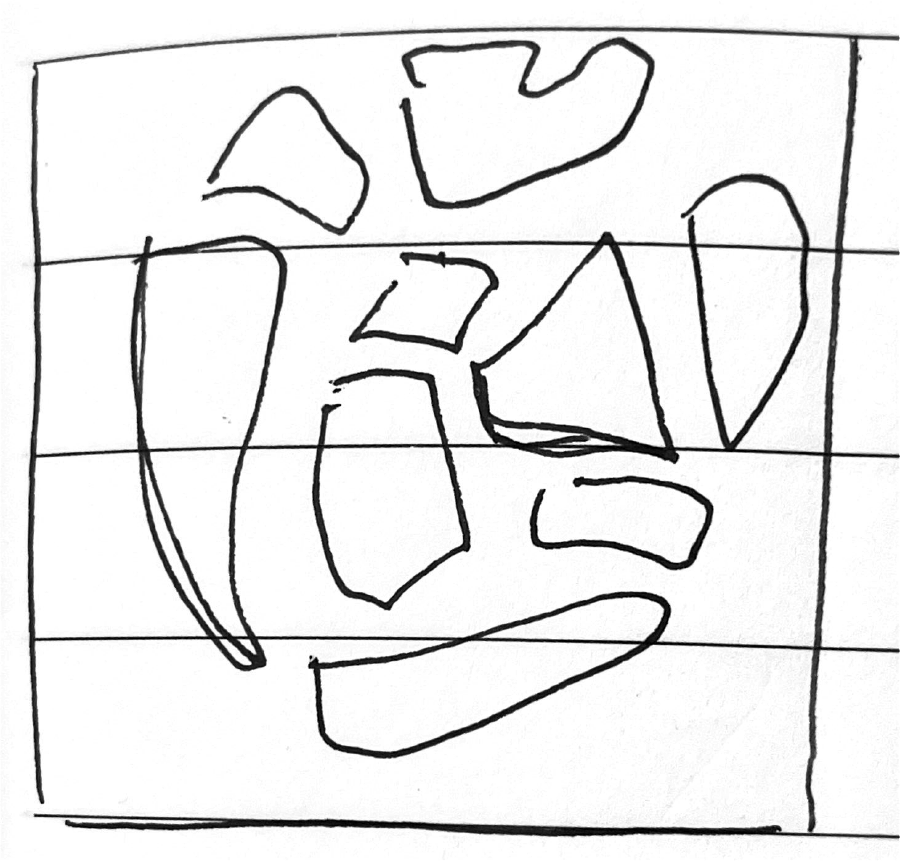

Pattern Blog
This blog comprises journal entries based on my experience with everyday patterns. My thesis hopes
to
investigate the psychological affinity and emotional effects of patterns on humans. By doing so, I
use
psychological strategies such as attention and emotional theories, Cannon-Bard and James Lange's.
This consistent repetition of photographing, sketching, and reflecting allowed me to discover
alternative
ways to look at patterns and myself. This process interests different perspectives we superimpose on
designed artifacts and how creating/selecting describes us. As such, design is a cycle of
repetition,
like
patterns.
Oct 9, 2024
So many swirls that makes it busy looking.
The colour brown or beige makes it dull. Why?
Maybe it’s because of the same tone that is not contrasting enough. The dark versus light shades are
different. The swirls fill up the space, making it overstimulated. Feels my energy spread throughout
the
chest area. A swirly florally like pattern of vines in brown and beige combo similar to ink
blotches. I
feel this tension within my chest. Anxious, lost on where to look. I feel my eyes going up and down.
The
little details of the brush makes me feel super itchy. It seems outdated and ancient. It captures
the
maximalist carpet look.
Oct 9, 2024
Flower prints bloom, spread out, water-colours, 3 block colour: orange, white, green, and lots of white
space. My initial feelings were relaxed? Because of the pattern or is it because it is in the context of
my room where I sleep? Breathable with white space to digest. Feelings come from the head. Focus is on
one spot which is at the flowers. I feel warmth within the colours. My eye changes, hopping around from
one place to another. I feel an unfolding sensation, the water colours send a chilling feeling. I find
the water colours to be relaxing and raw in nature. It is authentic and incomplete but the texture and
spacing is cold and sparse.
Oct 15, 2024
Mesmerized by the spacing and contrast in the pattern. I zone out within the space. I felt calm and
centered, looking at the middle. Almost like I am contained and united in this circle and grid
structure. The colour was brown and beige, giving a warm and cozy sensation. It is a flat 2D surface,
with nothing more to look into, like a wall.
Oct 15, 2024

It was a wood arrangement piece.
Walking into the Chinese buffet, I felt my energy at low. The atmosphere of the location did not excite
my anticipation for food. It was a dull and outdated design that is darkly lit, almost abandoned. The
strokes on the wood interlocking with different shades of brown resembles burnt firewood. Captured this
pattern within my position. It establishes a cultural touch with Chinese heritage. Red is an important
colour for luck and prosperity. The wooden materiality, I would assume, has a raw authenticity of
China’s upbringing. The random strokes of lines caught me off guard. While the wooden logs are organized
in a grid, its contents add a layer of texture. I feel a bit conflicted. My eyes move up, right, down,
left. Looping in a circle. Disrupting flow to shift in different directions. Mismatched coloration,
random holes. As a whole, it intrigues my mind. A pattern is ordered but the wood’s graining is
randomized. The holes, I wonder what are they for? But their addition led me to feel like I’m going in
circles. Like I am stuck in a loop, with these little holes that will soon turn into bigger problems.
Unstable was the feeling.
Oct 16, 2024
Walking in, I felt welcomed and enticed with the space. These repeated floor tiles illuminated with two
distinct shapes. Encapsulating negative and positive space. How do I feel? It was refreshing. Symmetry
kept my eyes more up-down or right-left. It seems that this was made using one charette. On the gray
motif, I’m drawn to see from the inside moving outwards. I feel this internalization of depth within my
heart. I feel faced with something I don’t want to stare at for too long. I find myself jumping from
black to black. I feel something unraveling in my heart. My chest. Pulling myself into different
directions. Symmetry is beautiful but scary. Maybe it’s the choice of colours. Something about
perfection seemed off-putting.
Oct 16, 2024
I spotted a pile of rocks.
As its sole purpose was to take up space, I find something within its pattern somewhat freeing. It was a
pile of jumble. But I felt like I was that jumble. My eyes move across the pattern. I felt confused, but
freeing. Almost like I can sense my energy flow between the crooks of rocks clashing into each other.
Following in streams, I find myself going through a journey. A mixture of shapes, textures, and
arrangements that collide together. Stimulating all places of my brain. I feel it pulsating. I feel
maybe overstimulated by looking through its nooks and crannies, making me split my energy everywhere.
Oct 17, 2024
The edge of the buildings had a pattern of bricks arranged in a staircase. Normally, I wouldn’t bat an
eye on this but right when I exited the vicinity, my foot felt the difference in height. I looked down,
I felt a ding sensation.
An alert!
I stepped on uneven surfaces. Growing up, I hated the feeling of these bumps and edges on the sidewalks.
It gave me such a disgusting feeling to feel something below my feet. The same I felt stepping on this.
As I looked at the pattern as a whole, I saw a staircase arrangement framed with vertical bricks. My
eyes were drawn by the flow of each line. Looking at it, I feel neutral. But following the lines felt
like shifting my energy from my chest to my head or down to my chest.
Oct 18, 2024
Enamored by the illuminated warmth of yellow, I gravitated towards the lantern like a moth. The
radiating pattern reveals a depth of branches and simple splotches of red and orange that reminds me of
autumn leaves. The frills coming out of the branch divided my attention, finding difficulty to focus on
the little details. My eyes bounce from splotch to splotch. It was a mix of overstimulation and skipping
stones with simplicity.
Oct 18, 2024

I spotted a plant behind my seat at the same restaurant. Leaves sprout in opposite directions. They are
big at the beginning and slowly become smaller as I draw my focus to the tip. I feel my energy become
sharper. Since the size of the leaves requires my eyes to view from big to small, my attention holds on
a bit longer. I sense the familiarity and comfort of how relaxing I feel from feeling the ground up. It
was a pleasant experience to look closely at. Perhaps nature was always connected to relaxation that
influenced my perception.
Oct 19, 2024
An interesting texture on a wall. I saw the metallic rust brown. It caught my eye. On the light that
shines upon the embossed surface. I paid attention to the circle first. It points to a center. It is
symmetrical and beautiful. I resonated deeply with the depth of colour, surface, and direction. I felt
like I was facing something ethereal. Perhaps it’s the metallic shine. The grid structure gives a sense
of stability. It overpowers, forcing my eyes to follow through. Little floral motifs added a touch of
life in contrast to its material.
It was inviting and warm.
Oct 20, 2024
Entering a bright orange cage, I noticed the black and white flower pot pattern on a window corner. It
stood out as I found my eyes moving horizontally, focusing on the direction of the middle row. Geometric
lines that go in zig zags created a playful atmosphere. I feel positive, up, and happy! I could imagine
my heart beating in tune with the nature of these lines. It was a sandwich of conveyor belts. It felt
like the pot was handmade with textured paints. The pattern brought out the fun in something that can be
hand-made.
Oct 20, 2024
The gold colour struck me the most. On how bright, bold, and warm, it lured my eyes to look even
closely. My eyes flicker between silver and gold. A repeated, complex motif. I felt positively
stimulated. For the level of detail, I needed to stay longer to actually feel the pattern. It felt like
an obstacle. My brain felt like solving a puzzle of its own. You would see one motif but there are two
within the negative space. A discovery. So interesting and satisfying to find the difference. It was at
the top of my head. A knot? A sensation that wrapped around my mind.
Oct 22, 2024
I immediately captured this ceramic cactus as I thought it looked so cute. Oh! A cute
ceramic cactus with circles popping out. I felt attached already with “cute.” Oddly it felt soothing to
see bright yellow bulging out of the green exterior. Glossy and ordered within columns, I find my eyes
following a vertical direction. I felt the urge to pop or touch these little balls!
Oct 22, 2024


Lines moving towards the center.
I felt an “itchy” sensation in my brain.
Calm and intrigued, I spent a short time looking.
Oct 23, 2024
This caught my eye walking to Richmond St.
These rectangular motifs scattered with my eyes looking from bottom to top. One with the most density.
An opaque window reflecting light, I was interested in how these shapes in its angle created
perspective. In opposite directions, short to long rectangles, my eyes divert looking at zig-zag
columns. The pattern added a sense of character to the window. Something like movement and life, I can’t
look at how I look when I walk.
Oct 25, 2024
Why rain?
I stared at the blank concrete canvas. Droplets fall from the sky. My eyes shift as I watch where each
landed. I felt so engaged and almost meditative to focus on this act. Overall, it was a soothing
experience. The pattern became small to a whole entity. Engulfed by its perpetrator. I sensed
fulfillment and a deep sensation of sentiment in my heart. Perhaps rainy days aren’t the best memories I
had. It was mind-opening to see new forms unveiled in front of me.
Oct 26, 2024
The colour itself spoke out to me.
Checkered red. Reminds me of a retro diner in the 90s. A classic and straight forward checkered pattern.
I like it. Even with the brand’s aesthetic, it calls for fun and cheerfulness.
A comic, racing, picnic.
This checker can be used for many things I could think of. Viewing this aesthetically, my eyes divide
when looking at its parts.
As a whole, it looks like background noise.
I can’t focus closely at all. Feels overstimulating. Reminds me of when you zoom in too close into a
Photoshop file, it gets blurry and pixelated.
Oct 26, 2024
Out of all the patterns on this Japanese sticker sheet, the geometric ones stood out the most to me.
Why?
It is strong, structural, and bold. It demands my attention. Crystallized stars when viewing its forms
reveal other forms from negative space when shapes are closer together. Layer upon layer. This is
infinity. My eyes are drowned with endless possibilities. There are x and y planes going in 2
directions. I find myself jumping from the centers of each shape.
Oct 27, 2024
From a whole selection/row of clothing, I instantly saw or even picked this black and white arrow
pattern. I loved the colours. I’ve been wanting a sweater with a touch of knitting. These arrows led me
to look from the ground up. I was captivated by the different techniques of each arrow. One seems to
alternate between black and white. Others are filled with white. Specifically, the alternating shades, I
was strongly engaged within. Stimulating with awe, it brings out another dimension, another layer. I
felt intrigued but I thought I wouldn’t know how to style the sweater, so I put it back on the rack. Did
I not buy it because of how others would perceive me?
Oct 29, 2024
I don’t usually notice this but compared to my old shower curtain, this one was very frustrating to look
at. Not only are the patterns scattered with shades of gray. I CAN’T SEE. It makes the shower appear so
dark. How can I shower when I can’t see the shampoo and conditioner bottles!? It does look pretty
though. I wish there was colour. It lacks liveliness. I find myself particularly interested. I see each
square is repeated “randomly,” there is no order. Amongst finding that same motif, I keep track of one.
The one I drew and this one here. It’s like I always end up finding these ones across the grid because
they caught my attention. I feel they have a focal point that directs my eyes to instantly spot them.
Oct 31, 2024
Free flowing lines remind me of the sand on the beach. The depth within the shadows allows easy
processing. From left to right, I feel my heart calming down. In sync with the lines, my breathing
follows through each rhythm unconsciously. I feel my brain aching. Throbbing. I am mesmerized by such
simplicity.
Nov 2, 2024
The use of negative space for this divider decoration was really cool. I could see the window and
background in the holes. Although, the pattern itself evoked an “oriental” pattern. Similar to Japanese
patterns. It is simple, clean, and bold. I feel immersed in the bold gold hexagon. Lines connecting
these hexagons demonstrates a level of intricacy and complexity. It gives me the room to breathe within
my viewing experience. I felt whole.
Nov 2, 2024
This might not be a pattern but it was really electrifying to see these lines on my way to the Go Bus
station at Union. It is both stimulating and energizing because of the lines and dynamic changes of
height between the lines.
Nov 3, 2024
I captured the wall because I saw a glistening shine. The pattern is subtle and quiet. I silently try to
examine these hexagons to its whole. I only could see a fragment because of the light that shines upon
its surfaces. The wood surface follows parallel to the direction of the lines that enclose them. It’s
illuminating. Shiny. Hexagons in hexagons. It is plain, but stands out due to its materiality. Wherever
it shines, I go. I follow the light as I try to piece them together. If it was just the wood as a
pattern, I would not have been intrigued. The thin shiny lines glowed so subtly.
Nov 5, 2024
Another use of hexagons grouped in a honeycomb composition. North, south, east, west black hexagons
surrounding the white space. My eyes look at the big blob of white space. Feeling nothing. Literally
nothing. Just stuck in space. When lost in space, I see the black hexagons come forward into my vision.
Blurred. Only they can clear the lines between the white hexagons.
Nov 6, 2024
Out of all the patterns that are overlapping one another, I particularly found this one to be most
familiar. Reminds me of a Chinese porcelain clay design. Blue and white. It’s calming to look at the
flower motifs. Refreshing to look at in the city area. Not too loud. Mesmerizing qualities of space.
Elegant that says “do not touch.” Eye direction to follow each swirl.
Nov 9, 2024
This is a Thai weaving pattern with the use of gold and red. Gold is often used in temple murals to
dedicate the role of Buddha. I recently went on a trip to Thailand for a cultural exchange. It was
amazing to relive the experience in this restaurant. The motif is a cultural motif and I perceive a
shape of an elephant. However, it may be something else. Its texture imitates weaving patterns with
abrupt rectangular rows. I feel a sense of importance, prestige, and an overwhelming pride of a
cultural
identity.
Nov 11, 2024
I saw this pattern and thought I had to analyze this. I laughed when I recognized the
leopard print, while my friends thought it was a cheetah. Their first reaction was how gross the
print
looked. I laughed. I thought it was amusing, playful, and innocent. Looking too much at it makes my
head
hurt though. I find my eyes scattered throughout in its simple duo colour palette. I often recognize
these animal patterns for kids parties, which leads to this nostalgic feeling within me. I find it
harder to focus on small prints versus big splotches. Almost like I’m zooming in.
Nov 12, 2024
A flower pattern where there is a dark band of navy with white-petaled flowers wrapped around the
bowl.
It emits an atmosphere of elegance and organic with its glossy finish and natural appeal. I feel
myself
resonating deep into the navy blue swamp. My heart sinks. Staring into each flower, it appears heavy
looking. I am once again reminded of my cultural heritage of porcelain designs. Filled with depth, I
feel myself floating in the deep navy sea.
Nov 13, 2024
Dark and light gray rectangles arranged diagonally to interlock with each other. Reminds me of
braiding.
It appears strong, unified, and plain. I don’t like how boring it looks. I find it contradicting
that
the dark side is fighting against the lighter side. My left and right brain feels a sort of
imbalance in
weight. I view light colours with minimal need for attention, which is less work.
Nov 18, 2024

Immediately, I noticed the blue and white pattern! It was so familiar looking because my family owns
Chinese porcelain clay vases. The pattern on the notebook is called Toile de Jouy. I researched this
pattern before where it is the European’s interpretation of East Asian culture. As a whole, I
thought it
was an Asian pattern. Looking closely, it shows a narrative of everyday life. With nature, people
and
animals, it depicts a glimpse of freedom. To me, it is cherishing every little thing that surrounds
me.
I could breathe easily and find a natural flow (like a river) as I checked from one place to
another.
The amount of detail and cross-hatching textures brought out a level. In a sense, this brings a
luxurious atmosphere of something “precious” and elegant. Perhaps, it is my cultural background that
I
see as a symbol of pride in my Chinese identity. That it is important and historical to me. It
requires
close attention. Especially when I see myself staying at one spot for a prolonged time.
Nov 20, 2024
The table had white splashes in a chalk-like texture scattered across its surface.
It was very messy and unappealing.
It reminded me of the untouched remains of spilt milk. Each splash was nerve-wracking to look at. It
stimulates my head unpleasantly at the very top. I wonder why this cafe chose this as part of their
interior design. I was very fixated and agitated by this messy sight. Every little mark on the table
had
my eyes twisting. I became so distracted and unorganized that I did not touch my work for 20
minutes. In
the end, I constantly find myself trying to wipe something that isn’t there.
Ahh, so frustrating!
Nov 21, 2024
After seeing the Toile De Jouy pattern at Staples, I thought I should capture my pottery at home.
This
is what I see everyday when I enter the living room. It is so familiar. I would know I am at home
whenever I see it. It gives me a sense of comfort and familiarity that I am in a Chinese-owned home.
Often overlooked, I examine closely this time to see how I feel when staring closely into the vines.
I
feel happy as my heart swirls. Almost as if the pattern itself helps embrace me and my identity. A
big
hug and appreciation to my cultural ethnicity.
Nov 23, 2024
This pattern is so iconic!
Especially in Dim sum restaurants. If I see this pattern separately by itself, I would automatically
recognize it is for Dim Sum places. Under the light, the swirls shine the brightest. It is spacious
and
intentional through its stroke weight. It is overlooked by many but it adds a natural and organic
appeal. Dim sum is shared amongst family. The fabric seems to connect everyone together with food
placed
on top. It brings me warmth and happiness. It completes the overall experience of sharing food with
loved ones. I find myself in an infinite loop. I view the vines in a continuous cycle, in a circle,
my
eyes not stopping to take a break.
Nov 23, 2024
What stood out to me the most was the overlapping foliage. Some green, blue, beige, and horizontal
blue
lines. The colour palette was unique and pleasant. It looks like there is a hierarchy amongst the
colours. The blue pops out towards me. And then the beige is hiding in the white background. With so
many different types of elements and textures, I find the pattern pleasant. I can’t look into detail
but
as a cohesive whole, it feels very explorative. I like it a lot. It is stimulating to look at and
it’s
fun to jump from one place to another. I feel a split attention. One side looking at the foreground
while feeling the buzzy noise in the background.
Nov 23, 2024
The carpet looked like a horrific disaster. It was like witnessing an actual crime scene. The
victim’s
blood was leaking and staining the entire carpet. The vibrant red attracted my attention like a
curious
hummingbird. Staring deeply into the pattern, its materiality simulating weaving attributes makes
the
entire piece look glitchy and distorted. I sense a level of confusion and frustration within myself.
The
little grainy texture makes me squeamish. If I look for too long, I will vomit. A physical sensation
of
disgust overwhelms me, causing me to glance away.
Nov 24, 2024
From these forms alone, I felt like I was in Antarctica. The use of blue to gray colour palette
evoked
the chilly atmosphere of the North pole. I find this pattern to be calming, as if I was taking a
stroll.
I allowed this path to lead me wherever it takes me. I see a majority of blues, my eyes avoiding to
meet
the gray platform. I felt at peace studying in this space. I was satisfied and grateful to have
found a
place like this. I feel that I process light colours more easily, than a deeper and darker colour
that
requires time for contemplation. As a whole, I feel my energy dispersing into many avenues. Almost
like
it’s leaking out. All I can say is, “this is what going with the flow” would look and feel like.
Nov 25, 2024
One glance and I knew I had to take a picture of this pattern! Although it lacks colour, the shapes
and
forms truly brought out this sensation of attachment for me. The layering of circles added an
element of
surprise as I see star shapes coming out of the negative space. The simple pattern is so mesmerizing
to
look at. It gave off a touch of elegance with its transparent parts to reveal the stores’ interior.
It
was inviting to look at. It was friendly and fun. My eyes stare in the direction of the columns. It
was
easy to process with fluid and smooth movements.
Nov 26, 2024
These dots in a grid structure reminded me a lot of street tactile pavings. It works well
functionally
and aesthetically, delivering an industrial mood. The space was cozy and warm. A small, retro spot
to
eat in a dark autumn afternoon. The pattern evoked nostalgia for me. Perhaps the weather had some
influence, but I feel like I’m reliving my childhood. The bright outlines of circles popped out to
my
attention and immediately I was playing a game of connecting the dots. It was fascinating to reflect
how
I jump from places and ignore the brown circles in the background. I thought this exercise was fun
and
uplifting, resulting in a positive mood.
Nov 27, 2024
Reviewing its composition, this pattern is the embodiment of nausea. The mixture of blues and a hint of
sage green created a mushy, stomach-churning experience. These stitches were unpredictable, the
embodiment of randomness. This overwhelming sensation made it difficult for me to look at the details
closely for a prolonged duration. I feel my body refraining and rejecting my desire to make sense of the
random colours in a chain. The pixelated stitches provoked a stippling or ticking pulse in my head as I
refused to wrap in the nauseating texture.
Nov 27, 2024
As I quickly scurried home, I couldn’t help noticing a lady with a lovely coat in bright magenta
floral prints. The flowers bloomed elegantly within its container. I can imagine they were too
precious to touch. There was a boundary on how far we could look from or feel its presence with its
square border. I particularly admired the vibrant colours that reflected a sunset beach, with navy
blues, oranges, and magentas. The pattern itself was visually complex, dynamic, and exciting to look
at. It didn’t just look like a flat surface. I was excited and happy to find such an expressive
pattern in this mundane city drowned in shades of grey. It was a tiring day, but I felt rejuvenated
after witnessing this bright pattern. You could say I felt like a mosquito attracted to light as I
walked behind the lady who travels in the same path as me.
Nov 27, 2024
Such subtle geometric shapes rotate as I run my eyes across each row. I felt pleasant with a variety of
movement dances around me. I stayed for a short while.
Nov 27, 2024
Quiet and symmetrical, the lines of this pattern created balance. They direct to a focal point in rows
of zig-zags wrapping around the pole. It was structural and 3-dimensional, reinforcing the pole’s
characteristics of stability and reliability.
It was fascinating to see how the interplay of light and shadow created depth and guided my eyes. A
repeated number of lines forces our eyes to follow through, making it hard to break through its command.
I instinctively followed the lines as if it were a natural response. It reminds me of habits and neuron
pathways where the brain enjoys taking shortcuts and easy outs.
I always stare at the middle, where the lines are dense and meet each other with fewer gaps. When
following these trails, my breathing relaxingly adjusted. My diaphragm expands and contracts as if I’m
walking peacefully through a park. I imagine it would be a great meditation exercise since it was
therapeutic.
Nov 28, 2024
These tiles repeat across the grid. A black background highlights the bright oranges to pop out, leaving
a bold and clean impression when crossing the streets. I saw the flower shape motif first. Then I
noticed the X’s spread across diagonally. Depending on where you focus, this pattern offers many
perspectives of shapes. I felt like I was playing a game, having fun finding different shapes pop out as
I shifted focus to many negative spaces. The pattern gave a sense of stability, providing Paramount’s
brand image seemed consistent in services or food. Replicating the pattern was challenging because of
its intricate motif, with many closely connected elements.
Nov 28, 2024
The geometrical triangles lined up in a grid, sharp and dynamic. Somehow, I felt perplexed by how
divided my attention was as my eyes separated, as they couldn’t agree to look at which side. Somehow,
the pattern enabled me to use my right side more.
I feel a sensation on the right side of my head as I stare deeply, weighing heavily on my head. The
contradicting shapes and colours cause confusion and signs of disturbance. It was a rigid and disrupted
flow. Moreover, looking diagonally at the top-right to the left-down dispels my worries. It was smooth
and satisfying. I find myself in the middle of a dilemma. As I stayed for a while, I saw check mark
shapes sideways that resonated with overlapping brain waves. It was more interesting to witness. It
created another dimension of a spiral staircase with a sharp geometric pattern on a round cup.
Nov 29, 2024
While shopping for clothes with my mom, I was drawn to a stitched pattern on a sweater. It looked
familiar, like something I had seen elsewhere, and I loved its aesthetic. I thought this was something I
would buy and truly identify with. It had a simple black-and-white palette with four rows of distinct
forms and shapes.
Each row had its own repeated motif—one with an X-mark, another with hexagons, and one with fire-like
flames. The sweater felt at home, wrapped in a cozy blanket on a freezing day. The patterns enveloped
me, and I felt uplifted. My complexion seemed to brighten, just like the sweater, filling me with
confidence. I loved seeing the intricate details and the strips of repeated motifs. My attention
sharpened, drawn to each characteristic, deepening my appreciation for the pattern.
Nov 29, 2024
A ceramic bowl with vibrant navy blue floral spiralling vines filled my entire vision. The weight of the
vine strokes felt dense, while the petals appeared soft and squishable. The bowl itself felt fragile and
delicate, yet the bold pattern gave it an illusion of heaviness. An intrusive thought crossed my mind.
These thick vines looked as if they could strangle me.
My eyes followed the winding trails of the vines, only to reach abrupt dead ends. I kept tracing,
searching for the longest continuous path. My gaze spiralled, and when I finally reached the end, a
sense of satisfaction washed over me. I felt joy as if I were spinning within the bowl itself.
The pattern had a playful, human touch, with its opaque brushstrokes and handmade imperfections. Each
petal varied in size, deepening my appreciation for ceramics.
Nov 30, 2024
I was in a room filled with constant noise—a pool of countless shapes and shades of gray. I was
paralyzed, engulfed by a swarm of static. I could only observe in the present.
It was cold, silent, and motionless. I couldn’t move or break free from the experience. It felt like
something meant to be absorbed as a whole at once. My mind refused to drift away from the center. It was
like looking through a microscope, where microorganisms demanded my full attention, prolonging the
moment. Yet, despite my focus, I couldn’t make sense of the composition.
Dec 1, 2024


The carpet featured diagonal motifs, mirrored and stacked in a bold, zigzagging pattern. The blocks
layered on each other, creating a striking and dynamic visual statement.
Its design felt continuous, with an embossed texture that stood out. Structurally, it was
intricate—twisted, tangled, and knotted together in an almost chaotic rhythm.
I found myself mentally tracing the lines, trying to decipher their paths. It was an engaging yet
draining puzzle. The overlapping forms reminded me of tangled cable cords lying in an interwoven mess.
Dec 2, 2024
Octagons repeat beside each other in a grid with pearl-marbled stone. The texture has a smooth finish
with ripples of the marble itself. In addition to the outline, it reminds me of ice cream chocolate
glaze. I would eat this pattern because it looks like it would taste sweet and delicious. As the
octagons stack together, a small diagonal square surprises me. Without intending to, the pattern created
a new shape to emerge. The outline stands out amazingly!
I felt organized and in order.
Dec 4, 2024
My friend’s woven hat felt rough. The fabric was thin and itchy, possibly worn down from prolonged use.
Despite this, it seemed like it would be warm to wear.
The braided pattern created a strong, interlocking structure that helped retain heat. Its crisscross
motion was visually pleasing, adding a sense of rhythm to the design. I examined the crevices where the
braids intersected and wondered what could be inside. Could there be dirt, dust, or even a little bug?
The pattern stands out as a rich, textural piece. However, I did not enjoy the feel of the material—its
fuzzy texture was unpleasant against my skin.
Dec 4, 2024
This floor pattern was dark and simple. I felt myself drowning, the lines above trapping me under like a
fish caught in the ocean. The lines change unpredictably. The sight of looking or even finding the motif
was confusing. I refused to locate a commonality in the pattern and appreciated its overall look. I
suddenly have a tendency to object to anything that looks difficult. My brain does like to have
shortcuts. The composition was confusing, making it hard to find a pattern in the pattern. Thus evoking
me to feel nauseous. My brain itches. My tummy squirms. It was a pleasant whole and a not-so-pleasant
analysis.
Dec 9, 2024
I gazed at a beautiful green and white plaid skirt with envy. My first thought was, it’s so pretty. I
wanted one for myself.
As I looked closer, a sense of calm washed over me. The perpendicular lines overlapped in intricate
repetitions of squares, creating a pattern that felt both structured and soothing. The combination of
lace and stitched textures, along with its simple two-colour palette, added depth to its design. My eyes
moved horizontally and vertically, tracing each intersection, bringing quiet comfort to my soul as I
encountered the subtle bumps of different fabric patches.
Dec 10, 2024
The napkin was hidden and quiet. Although a napkin is used for disposal, I can’t help but feel cautious
and aware of how I use the product. The sheets showcased a stunning diagonal pattern with elegantly
embossed flowers. It was delicate. Perhaps because of its subtle details, it appears soft and special.
It truly encourages me to appreciate the little things around me because disposable items are crafted
with care.
Dec 10, 2024
The leaf pattern surprises me! It reminded me of a spine and ribcage that alluded to my personal
experience with scoliosis. Something horrific and gory came to mind when glancing at these lines. I was
uneasy. My heart trembles as I feel myself. I am pushing to stay and analyze a bit more. The deep cut in
the center appears to sink into my soul. I feel anxious and heavy in my chest.
Dec 11, 2024
A jolly time of the year! Seeing Christmas patterns and the repetitive use of snowmen, trees, and more
makes me so happy and excited. These motifs were traditional to celebrate Christmas. It has been a
common association since childhood. Therefore, I always feel excited and grateful for the season to
come. It will always remind me of childhood, nostalgic references that heal my inner child every year.
Dec 13, 2024

I thought the circles on the fish were interestingly disturbing. It was uncomfortable looking closely at
the multiple circles, giving me shivers. This would definitely trigger trypophobia for someone. It
reminded me of how one would illustrate chicken pox and that the fish was infected with a disease. I get
shivers just staying here to look at it even more closely in the grocery store.
Dec 16, 2024
This pattern inspires me to create more. Its symmetrical balance and harmonious blend of shapes ripple
gracefully across the ground. It reminds me of bursts of fireworks—the feeling of awe as light explodes
against the night sky. The radiating forms merge seamlessly, with space to breathe as they extend
outward from the center. Analyzing this pattern brings me joy, allowing me to relive that mesmerizing
experience through design.
Dec 23, 2024
A simple white, black, green, and orange palette. Random tiles of geometric shapes collide together in
random directions. Scattered within a square frame, I imagine a room full of people dancing. The mix of
shapes and colours creates a visually dynamic movement that causes a chain reaction. Somehow, I feel sad
that I’m watching from the outside and not joining along.
Dec 24, 2024
I thought this was hideous. It was perplexing and suffocating to step on. The floor pattern was
irritating, reminding me of fingers scratching against a chalkboard. Yikes. What a terrible shiver I got
from taking a glance. I could not look any longer.
Dec 24, 2024
The wall glistens from the light that shines upon it. The mosaic pixel pattern tickles my brain in a
good way. I could not feel any emotion from this. Away from any emotion, it embodies the ‘nothingness’
feeling of not being able to feel but only see. The variation of black to white starts from the bottom
up, reenacting a scene of staring into nothingness as the firewood burns in flames.
Dec 27, 2024

I took a picture with the Nutcracker! At first, I was drawn to it as a classic tourist artifact.
However, I was surprised to notice a pattern in the background. The diagonal lines disrupted the
structure, adding movement and energy. This dynamic contrast made the subject stand out more,
constructing a visually striking effect. The scene felt vibrant and captivating. I was grateful to have
captured the moment.
Dec 27, 2024
I felt it was necessary to add Andy Warhol’s Campbell’s Soup Cans as he repeats an item (with different
labels) in a grid. His use of repetition reveals why humans like patterns. As an iconic and historical
piece, the message of repetition displays consumerism and media saturation. With so much noise in the
world to advertise a product and say a ‘catchphrase,’ the human brain will grow familiar and attracted
with time. The art piece creates conversations about societal norms and consumerism, revealing how
powerful patterns are to enforce immediacy and importance.
Dec 28, 2024
In a New York City subway tunnel, I came across a grid filled with various iconographic motifs. The
deliberate use of blues and reds accentuated specific elements within the design. While I couldn’t fully
grasp the story behind the motifs, I was immediately struck by the beauty of the mural, leaving me in
curiosity.
Dec 30, 2024
This wall of curves reminds me of a flock of birds soaring through the sky. Reflected in rows, the
composition and form assembled a soothing rhythm. However, with little to no negative space in between,
I began to feel a little suffocated. I long for more openness to fully appreciate the movement. As I
stare deeply into the flow, I feel my body tense and a quiet sense of unease settles in.
Jan 4, 2025
Strands of pine needles swirled through the air. Their lines mirrored the texture of woven fabric—rough,
itchy, almost agitating. Yet, within this discomfort, the pattern carried a quiet gravity, a paradox of
liberation and tension. It played with shadows and silhouettes, creating a sense of depth. It was more
than just a flat surface, a presence within the world.
Jan 20, 2025
A pencil case with the brand framed by a repeating motif. The stitch and texture of the fabric add a
human touch to its organic pattern. Its aesthetic relates to medieval decorative motifs in clothing,
curtains, and more. Traditional and warm at its core, it was ready to assist me when needed.
Jan 20, 2025
While glancing up at Union Station, I unexpectedly discovered a pattern. I was surprised that a wall
meant to conceal a construction site had a decorative aspect. Positioned high above, it seemed to
silently observe the bustling crowd below. What captivated me the most was how yellows from the back
layer illuminated through holes in the front layer, creating a striking visual effect of depth. A sense
of excitement blossomed from my chest, like a flower unfurling. I couldn’t help but smile from ear to
ear upon discovering this hidden gem!
Jan 27, 2025
The repetitive zigzag lines drawn with a Sharpie created a bold, dynamic, and playful statement. The
graphic exuded energy, inviting experimentation with different forms. Despite its monochromatic grey
palette, I was drawn more to the movement and structure than the colour itself. The thick lines ask for
my attention, almost confronting me directly. Strangely, this pattern sparked an unexpected surge of
energy—an urge to punch something or engage in a physical activity.
Jan 27, 2025
This packaging design has interlocking elements that convey a sense of stability and strength. The warm
hues of yellow and brown evoke feelings of comfort and hospitality. However, the intersecting diagonals
disrupt the flow, creating a sense of tension. There’s an intriguing dimensionality in how the lines
pass through circles, adding complexity to the design. Since this pattern is tied to branding and
consumerism, I was conflicted. Looking visually appealing, I can’t shake the feeling of being deceived.
Jan 31, 2025
I see a bunch of stars at first. When looking closely, other shapes unintentionally created these stars.
The round curves and depth in its layers evoked a sensation of stability and neutrality. It does not
evoke anything but interest.
Feb 2, 2025
I picked a floral print to create a scrunchie, a mini sewing project. I thought it was such a pretty
design. Immediately, I thought this would be something I would wear. I would describe my taste as
including organic and natural elements that bring warmth I feel from the outside. I can feel myself
lying under an abundance of flowers on a spring day. I first focus on the little details and appreciate
the variation of flowers. Something simple like this immediately makes the fabric more desirable.
Feb 7, 2025
Triangular rows repeat one after another. I feel the colours are dull and desaturated from their vibrant
hue. I would associate feeling bored with this exact pattern. Not much is intriguing as it reflects on a
2D surface with no hidden shapes revealed from close forms together. As this is on a cloth, I feel the
low quality of the pattern makes it easier to use the cloth as an object to dispose of.
Feb 10, 2025
I recognize the Japanese pattern Seigaiha, which is repeating semi-circles overlapping in rows. They
signify waves in Japanese design. This one uses dots to shape their waves. Discontinuous lines are
connected to each other as my brain processes with a sense of direction and proximity. I feel calm with
everything spaced apart. My body breathes at the beat of each dot. It was peaceful and serene.
Feb 15, 2025
The use of bows is repeatedly associated with the popular ‘coquette’ aesthetic, where this generation
strives off of different identities of aesthetics. It romanticizes the Victorian period, bringing lace,
pink/pastel colours, and more in outfits. I loved the trend and embraced things I found feminine. The
repeated use and categorizations of aesthetics encourage people to identify with it. It is what makes
habits desirable when you want to become something you want others to see you as. The pattern is
identity. The shine is ethereal and reminds me of hair. It is a pretty object that prompts an immediate
reaction to saying, “Cute!”
Feb 24, 2025
This wood-carved motif was astonishing. The technical precision of the relief, along with the smooth,
flowing curves, made it truly special. I was most drawn to the center, where the leaves repeated
radially, creating a mesmerizing focal point. The ornamental, whimsical details of the leaves reminded
me of Art Nouveau’s core characteristics: graceful, organic, and expressive. I’ve always admired how Art
Nouveau patterns bring character and appreciation to art, and this piece was nothing short of divine.
Mar 2, 2025
I took pictures of the clothes I would buy. Most of the spring collection featured 2D flat
patterns—pretty designs that offered a glimpse into this season’s trends: florals, pastels, and light
fabrics. Patterns in clothing add layers and dimension, transforming fabric into a canvas of expression.
I love seeing people style their outfits, mixing colours with different textures. As flowers bloom in
spring, floral motifs mark the season’s return, a natural rhythm reflected through fashion.
Mar 8, 2025
A bull/cow motif decorated with flowers glare towards my direction. I felt alert, yet fascinated by the
level of detail in this embroidered animal. Fluffy animals are cute. However, I typically associate
danger with the bull as they can ram into you. An uneasy feeling grew inside of me. The design uses
vivid reds with notes of blues and pinks. I feel its powerful and charismatic presence from its eyes as
the colours stand boldly.
Mar 8, 2025


A couple of mugs were decorated with detailed blue swirls and small motifs, seemingly inspired by
Chinese porcelain designs. I feel a bit overwhelmed by the energy and noise created when details are
densely packed together. The other mugs had a similar colour palette but featured different motifs with
more open space.
My eyes are drawn to the center of this one cup. I could breathe freely and rest from admiring the
intricate details. It resembled a snowflake, evoking memories of winter, which is now melted away.
Mar 9, 2025
Beautiful tiles of flowers in various orientations and colours. The black connects everything together.
It is strong and captures my initial attention. I appreciate the red and beige adding that organic,
natural atmosphere to the area. Looking closely at the single-coloured motif, I see a black border
surrounding it as the focal point. With a dusty texture, I feel enlightened and grounded with the
earthly tones and structure of the design.
Mar 10, 2025
Bamboo straws overlap, forming an octagonal-hole pattern. I was ecstatic to see these textures
intertwine. It seems unlikely that a machine could create this; I imagine the creator thoughtfully
considering which strand should rest atop the other.
With multiple layers and a careful balance of negative space, I feel a weight lifted from my shoulders.
The delicate strands intertwining evoke notes of happiness that burst like floating bubbles. I do not
feel the fullness of joy but rather its lightness. I appreciate the effort and complexity of the
material used to craft this pattern.
Mar 11, 2025
The diagonals and diamonds create a striking sense of depth. The white lines resemble fences, guarding
the tiny pickle-patterned background. I find myself peeking through the gaps, searching for the little
lines within the background. Curiosity took over, and I became mesmerized, playing a quiet game of
peek-a-boo with the design.
Mar 12, 2025
The couch features a cushion pattern with deep-set buttons. I wonder who designed it to feel both
luxurious and comfortable. Sitting on its high-quality, velvety material, I feel like I’m on a throne. I
also wonder about its original function. At first, it’s hard to form an emotional connection, but the
design invites interaction. Its plush appearance suggests comfort, and upon sitting, it was true.
Mar 14, 2025
The tile contains a mix of curves and straight lines. The colour palette had hints of earth tones such
as browns, yellows, and greens. With the most vibrant brown capturing my attention in its deep hue and
bold colour blocking, I felt centered in a prolonged gaze. I detect my vision sharpens in tune with my
feelings. The leaves point towards the middle, guiding my eyes to look there initially. I felt secure
and comforted with the visuals of blue and yellow intertwining. It was beautiful with the balance of
thick strokes and hierarchy. The low saturated green provided a hidden beauty, increasing depth within
the overall pattern.
Mar 18, 2025
The leaves fall flat. The lines keep the structure intact, looking thin and fragile. The use of black to
greys allows the bright red to stand out. The pattern felt sad, almost drained from life. Demoralizing,
with specks of red that hint little hope.
Mar 18, 2025
Interesting blocks of marble repeat across the smooth white floor. A rigid, structural space forms as I
step on the dull city buildings. I predict that these buildings would have those office cubicles. I look
longer to see grains of noise. I was fixated, looking at the same thing repeatedly.
Mar 22, 2025
I recognized the paisley textile pattern from its iconic tear-drop shape. The pattern made me feel like
it was swimming underwater with fall leaves floating through. My eyes move along with the swirls. The
spikey, sharp red outlines signal danger. As a whole, the pattern looked lively and energetic, with so
many little details that surprised me each time.
Mar 26, 2025
This staircase had so many patterns on each level. I admired the variety in every step. The flower motif
stood out because of its dense, bold form that demands attention. I liked the circle at its center,
locking me in to engage longer. I was mesmerized.
Mar 31, 2025
The wall art tiles reminded me of playing the game Snake. The pattern was shaped like the waves, as
small blue square tiles repeated in a flow. This was a fun accent to disrupt the plain, white grid. Lost
in the deep sea, my eyes ascend and descend slowly. I felt the beat of my heart relax.
Apr 2, 2025
The bright orange pops out across from the plastic bag. It intrigues me. I was happy approaching such a
detailed pattern. The repeated use of white lines formed into leaves gives texture and dimension to the
abundance of nature. It was organic and light. Within my chest, I was fluffy and giddy, hopping in joy.
Apr 3, 2025
This pattern tickles my brain in a good way! The mat was inviting me to step on it with simple rows of
white and greys on the bathroom mat. The little fluffy dots were comfortable under my feet. I started to
wonder how it felt to touch the different colours. One felt heavier than the other. I understand they
were made of the same material, but my brain makes its assumption.
Apr 7, 2025
Even fences are patterns, too! The metal wires intertwine, building a protective space, marking the area
that “thou shall not pass!” I thought it would be easy to climb over, but others would be able to see
me. It was hard to focus on the pattern. The background filled up my vision—almost so that it was meant
to be hidden. I find myself
Apr 7, 2025
The chair in the lobby had such a dynamic pattern. The diagonal lines were the first thing my eyes
followed. There were black columns weaved in to create a halftone effect. Viewing too closely can be
dangerous as I find myself confused. I was astonished by the textures that change when you walk around
the chair at different angles. It scratches my brain, making me a bit anxious.
Apr 9, 2025


The red and navy blue pattern reminded me of a rose bush. The vibrant red roses shine bright under the
sunlight. They looked beautiful and complex with various shapes and sizes. I wanted to pick one up and
smell them. Although that sounds awful if I did it on the TTC bus… Subtle dark reds points to depth and
layers on the pattern. I enjoyed looking from afar.